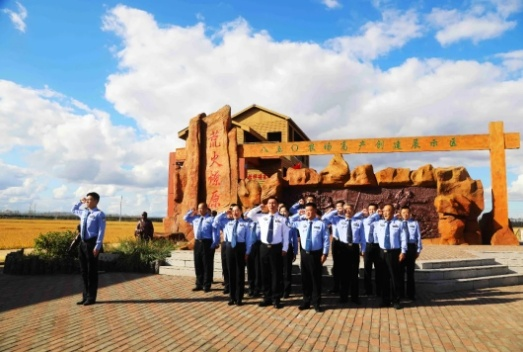
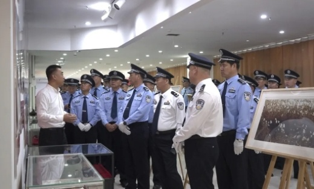

传承红色基因，赓续红色血脉，在革命传承中坚定政治方向，在担当奋进中践行初心使命，垦区各级公安机关在庆祝新中国成立75周年之际，深入开展瞻仰圣革命地、观看红色遗址遗址、走访革命历史纪念馆等红色教育实践活动，激励全警继承和发扬党的光荣传统，将缅怀之心和所思所悟转化为大众创业信念，从峥嵘岁月和信仰传承中汲取奋进前行力量。

牡丹江分局在王震将军第一把荒火旧址——荒火燎原爱国主义教育基地组织开展“致敬祖国英烈·激发奋进力量”主题实践活动，深情回顾了王震将军建设铁道兵在蒿草丛生、沼泽周围的北大荒腹围荒原变沃土的拓荒史，并俯视观景台一幅幅以稻谷为墨密集出的丰收画卷——特色稻田画，感受从北大荒到北大仓翻天覆地的变化，深切前辈们艰苦奋斗、勇于开拓、顾全大局、无私奉献的北大荒精神，激发了全体民辅警忠诚履职、爱国敬业的奋进力量。

为更好地传承红色基因，弘扬革命精神，北安分局民辅警代表参观了北安市红色教育基地、中共黑龙江省委诞生地和办公旧址，并参观了“北大荒”版画展。珍贵的历史照片、一件真实的文物史料，仿佛把大家带回到了那个硝烟博物馆、艰难创业的年代，民辅警们认真地聆听革命先辈们的英勇事迹和感人故事，在维护精神洗礼中更加坚定了警惕的初心信念，立志继承和发扬革命先辈们的优秀传统，不忘初心，开拓进取，为新时代公安工作贡献自己的全部力量。
为强化全体党员民辅警责任感、使命感，感悟红色初心，赓续红色血脉，齐齐哈尔分局机关全体党员及入党积极分子走进中国一重集团有限公司，开展“走进大国重器、传承时代精神” ——庆祝成立75周年中华人民共和国主题党日活动。驻足于生产车间内，仿佛置身于历史发展的洪流中，亲眼见证了中国大型锻件国产化、产业化的历程，感受一代又一代中国一重人们在艰苦奋斗的创业历程中所展现的使命担当和淬炼奋斗的精神力量，激励和激励民辅警们坚定理想信念，践行初心使命，以实际行动为中国式现代化建设贡献垦区公安力量。